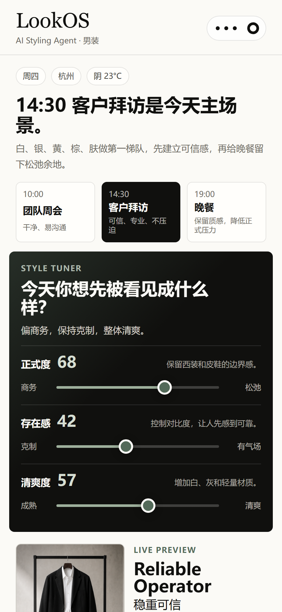
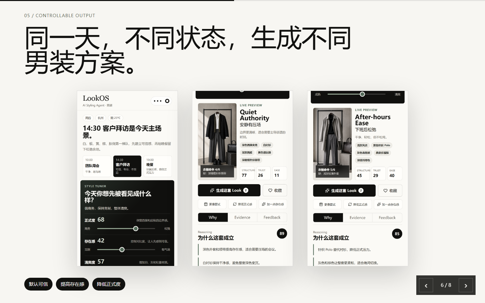

先点进去玩
操作核心是三条 Style Tuner：正式度、存在感、清爽度。拖动后推荐会实时切换。
打开小程序原型Interview showcase
不做女装，不做玄学查询页。LookOS 用日程、天气、衣橱和风格滑杆，帮男性用户在 30 秒内调出一套可穿、可解释、可反馈的今日 Look。

操作核心是三条 Style Tuner：正式度、存在感、清爽度。拖动后推荐会实时切换。
打开小程序原型8 页 Deck 讲清楚从五行颜色到 AI Agent 的产品重构、证据链和数据闭环。
打开展示 Deck30 秒和 3 分钟两个版本，适合面试时把审美、Agent 和岗位能力连起来。
打开讲稿Core judgment

Role fit